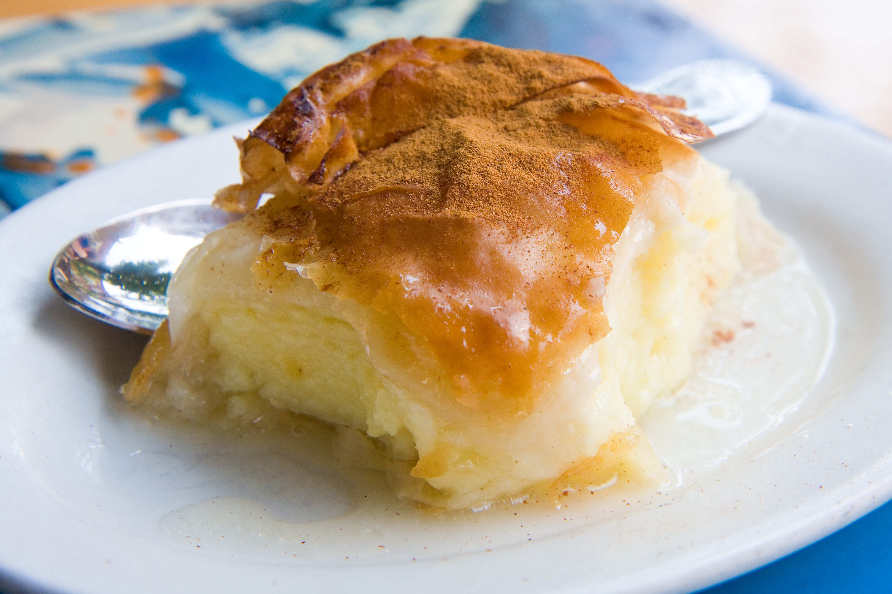

Galaktoboureko

Description
Galaktoboureko is a traditional Greek dessert made with layers of golden brown crispy phyllo, sprinkled with melted butter,
filled with creamy custard, and bathed in honey syrup.
Ingredients
- 12 sheets phyllo
- 9 oz. butter
- 6 oz. ground semolina
- 27.7 oz. sugar
- 17.6 oz. milk
- 4 eggs
- 1 tsp vanilla extract
- 17.6 oz. heavy cream
- 11.4 oz. water
- 1 tbsp honey
- 1 lemon peel
- 10 drops lemon juice
- 1 cinnamon stick
Steps
- To make this Galaktoboureko recipe, start by preparing the syrup. Into a small pan add 20.2 oz. sugar, the water and lemon peel, cinammon stick and lemon and bring to the boil.
Let it boil just until the sugar has dissolved. Remove the pan from the stove, add the honey and stir.
Leave the syrup aside to cool completely.
- Pour into a saucepan the milk, the cream and 120g of the sugar, and bring to the boil. (Don't whisk the mixture.
The sugar at the bottom of the pan protects the milk from burning.)
As soon as it comes to the boil and heats up slowly add the semolina and the vanilla extract, whilst whisking.
Turn the heat down to medium heat and whisk constantly until the mixture becomes creamy. Remove the pan from the stove,
add a knob of butter and fold. Let it cool down while you are preparing the remaining steps, until warm (50c / 120F),
else your mix will curdle when you fold in the eggs. Just remember to whisk it once in a while.
- Divide the eggs into yolks and whites. In most traditional Greek recipes, the eggs are added whole towards the end,
but with this Galaktoboureko recipe the eggs are beaten into meringues and combined in the semolina based cream.
This is the secret to a more fluffy and creamy custard and to avoid the egg-y smell, which can ruin the flavour of your Galaktoboureko.
- Place the egg whites and 50g sugar in a mixing bowl. Make sure your egg whites, bowl and whisk attachment/s are free of any water.
Use an electric mixer or electric hand beaters to whisk the egg whites and sugar until the mixture is very thick and glossy,
all the sugar has dissolved and a long trailing peak forms when the whisk is lifted (meringues). Set aside.
- In another bowl, whisk the yolks and 50g of sugar, until the mixture is thick and foamy. This should take about 5 minutes.
- With a spatula add 1/4 of the meringues into the egg yolks-sugar mixture and blend with light circular movement from the bottom up.
Gradually add all the meringues into the mixture and fold.
- Fold together the two mixtures and set aside.
- For this Galaktoboureko recipe, you need a large baking tray, approx. 25x32cm. Melt 230g of butter (low heat) and butter the bottom and sides of the tray.
Remove the phyllo roll from the plastic sleeve. You will use 6 sheets of phyllo for the bottom of the Galaktoboureko.
- Begin by layering the sheets one by one on the bottom of the tray, making sure to sprinkle each one thoroughly with melted butter.
Layer four sheets of phyllo so that they extend half in the pan and half out of the pan horizontally and vertically and two more in the middle.
- Tip in the custard, smoothing the surface with a spatula and fold the phyllo sheet flaps over the custard. Sprinkle with melted butter.
- Add 6 sheets on top, sprinkling each sheet with melted butter. With a knife trim some of the excessive phyllo and use your pastry brush to help you turn the phyllo inwards,
towards the bottom of the pan to seal the galaktoboureko.
- Scar the top of the Galaktoboureko in pieces with a sharp knife. Cut down until the knife reaches the cream.
- Pour over the remaining butter. Sprinkle with a little bit of water.
- Bake in a preheated oven at 160C for 60 to 75 minutes until the phyllo is crisp and golden.
- As soon as the Galaktoboureko is ready, ladle slowly the cold syrup over the pastry.
- Serve after the syrup is absorbed. Enjoy!
Home